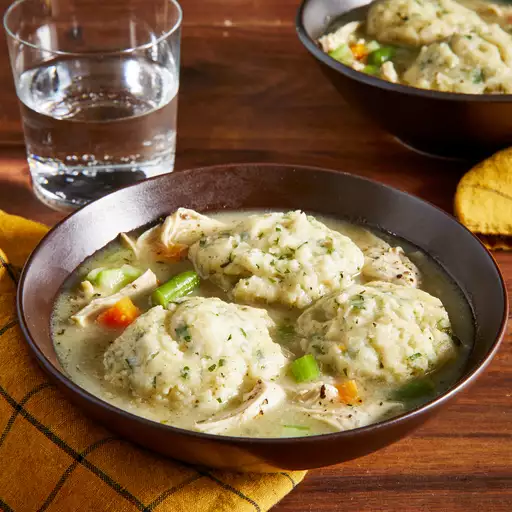

Instant Pot® Chicken and Dumplings

Recipe Description
I wanted the richness of long-simmered chicken stew, but without the fuss of using a whole chicken. This compromise, using boneless skinless chicken thighs with bone-in chicken breast, gave me the richness of flavor and ease of preparation I was looking for! It's basically chicken pot pie made in a pressure cooker rather than an oven.
Ingredients
- 1/2 tablespoon olive oil
- 1 cup diced onion
- 1/2 cup diced carrot
- 1/2 cup diced celery
- 1 bay leaf
- 4 cups low-sodium chicken broth
- 1 pound boneless, skinless chicken thighs
- 1 pound bone-in chicken breasts, skin removed
- 1/2 teaspoon thyme (Optional)
- 1/2 teaspoon dried marjoram
- 1 teaspoon salt
- 1/4 teaspoon freshly ground black pepper
- 2 tablespoons unsalted butter, softened
- 2 tablespoons all-purpose flour
- salt and ground black pepper to taste (Optional)
- 1/2 cup frozen petite peas
- 1/2 cup frozen cut green beans
Dumplings
- 1 cup all-purpose flour
- 1 teaspoon baking powder
- 1/2 teaspoon salt (Optional)
- 2 tablespoons cold unsalted butter
- 1 tablespoon chopped fresh flat-leaf parsley
- 1/2 cup buttermilk
Steps
- Pour the olive oil into a multi-functional pressure cooker (such as an Instant Pot®) and select the Saute function. Cook onion, carrot, celery, and bay leaf until the vegetables are soft and the onion has turned translucent, about 5 minutes.
- Add chicken broth, chicken thighs, chicken breasts, thyme, marjoram, salt, and pepper. Close and lock the lid. Select high pressure according to manufacturer's instructions; set timer for 9 minutes. Allow 10 to 15 minutes for pressure to build.
- Release pressure carefully using the quick-release method according to manufacturer's instructions, about 5 minutes. Carefully remove the chicken pieces with tongs and place them in a bowl to cool slightly; discard bay leaf.
- Mash butter with the flour to make a smooth paste; set aside.
- Combine flour, baking powder, and salt in a bowl for the dumplings. Cut in cold butter until mixture is the texture of cornmeal. Stir in parsley and set aside.
- Shred cooled chicken and return to the pot. Taste the broth and adjust the seasoning if needed. Add peas and green beans. Stir in the flour-butter paste. Select Saute function to bring broth back to a boil.
- Pour buttermilk into the dumpling mixture and stir until combined. Drop the dumpling dough by heaping spoonfuls on top of the stew; a small cookie scoop works well.
- Cover pot with the lid, leaving the steam vent open. Select Slow Cooker function and simmer on Low, covered, until dumplings are cooked through, 10 to 12 minutes. A skewer inserted in the center of a dumpling should come out clean.
Cook's Notes:
If you want to use this as a pot pie filling, decrease the chicken broth to 2 cups.
If you have a mini food processor, it's perfect for step 5. Transfer the flour-butter mixture to a bowl before proceeding.